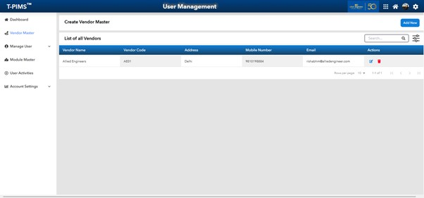

User Management
T-PIMS™ supports organization-wide usage while protecting data integrity through role-based access. Define granular permissions by user groups—from contractors who upload survey data, to senior executives with full system rights. Secure, scalable, and policy aligned.
Back to overview